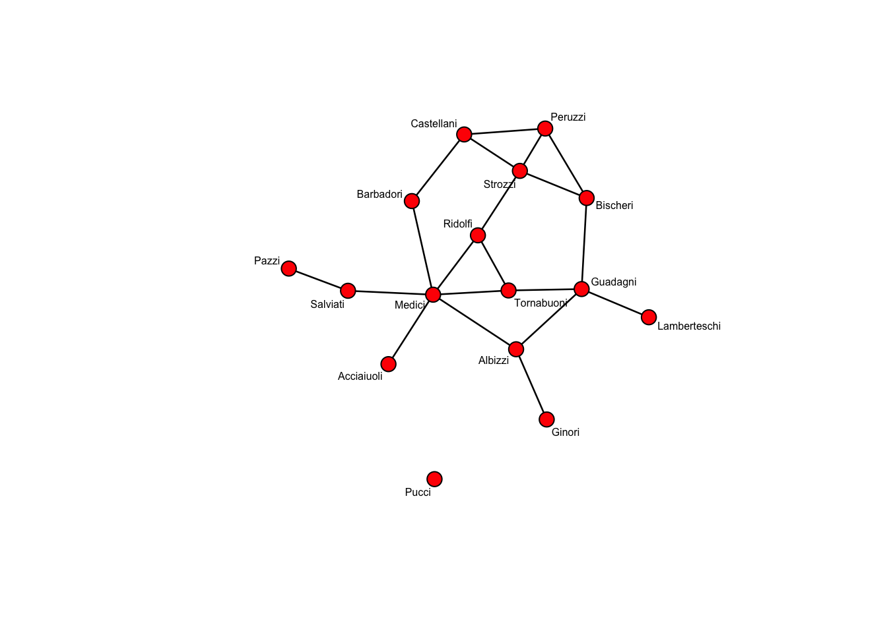

The Bergm package for R depends on/makes use of functions included in the following packages: statnet suite of packages ( in particular ergm and network), coda, MCMCpack, Matrix, mvtnorm.
To install the Bergm package:
install.packages('Bergm')To load it:
library(Bergm)To get more information about it:
help(package = 'Bergm')\(Y\) may be directed so \(Y_{ij}\) and \(Y_{ji}\) are two different random variables observed between the same pair of nodes.
Let’s consider, for example, the florentine marriage network dateset (type ?flomarriage for more info) included in statnet:
data(florentine)
y <- flomarriage # let's save our data as y
y # basic info about the flomarriage network data## Network attributes:
## vertices = 16
## directed = FALSE
## hyper = FALSE
## loops = FALSE
## multiple = FALSE
## bipartite = FALSE
## total edges= 20
## missing edges= 0
## non-missing edges= 20
##
## Vertex attribute names:
## priorates totalties vertex.names wealth
##
## No edge attributesplot(y,
vertex.cex = 2,
label = network.vertex.names(y),
label.cex = 0.5)
Given a certain ERGM model \(f(y | \theta) \propto \exp \{ \theta^t s(y) \}\) defined by some network statistics \(s(y)\) and corresponding parameters \(\theta\), we can use the Bayes’ theorem to calculate the posterior probability distribution of the parameters \(\theta\) given the observed network data \(y\): \[p(\theta | y) = \dfrac{f(y | \theta) \: p(\theta)}{p(y)},\] where:
The aim of Bayesian parameter inference is to estimate \(p(\theta|y)\) by specifying some prior distribution on the parameters \(\theta\) associated to the network statistics that we inted to include in our ERGM model.
Real-world social networks are generally sparse meaning that their density (i.e., the proportion of edges) is close to 0. This implies that the parameter corresponding to the number of edges in an ERGM model is generally negative. Also, we often expect that the parameter associated to triadic clustering statistics (such as the number of triangles or gwesp) in the network, is positive. This prior information (i.e., set of assumptions on the effects that are made before observing the dataset) can be used to specify a prior distribution.
In the Bergm package the prior distribution is represented by a multivariate normal distribution: \[ \theta \sim N(\mu, \Sigma) \] with parameters \(\mu\) corresponding to the mean vector, and \(\Sigma\) corresponding to the variance/covariance matrix.
Suppose to want to estimate the posterior distribution of an ERGM model with statistics edges (number of edges) and gwesp (geometrically weighted edge-wise shared partner statistic):
model <- y ~ edges + gwesp(0.5, fixed = TRUE)
post <- bergm(model,
iter = 100)
attributes(post)## $names
## [1] "Clist" "MHproposal" "control" "formula" "model"
## [6] "nnodes" "specs" "dim" "nchains" "stats"
## [11] "Theta" "nchains" "AR" "prior.mean" "sigma.mean"
## [16] "aux.iters"
##
## $class
## [1] "bergm"post$AR## [1] 0.506 0.513 0.529 0.462bergm.output(post)##
## Posterior Density Estimate for Model: y ~ edges + gwesp(0.5, fixed = TRUE)
##
## Mean SD Naive SE Time-series SE
## theta1 (edges) -1.67939789 0.3773263 0.005966052 0.02783770
## theta2 (gwesp.fixed.0.5) 0.02537995 0.2738662 0.004330204 0.02046227
##
## 2.5% 25% 50% 75%
## theta1 (edges) -2.435070 -1.9499386 -1.68040737 -1.4200471
## theta2 (gwesp.fixed.0.5) -0.519065 -0.1440037 0.01293463 0.1994005
## 97.5%
## theta1 (edges) -0.9847549
## theta2 (gwesp.fixed.0.5) 0.5538877
##
## Acceptance rate: 0.5025
##
##